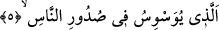

“el-Hannâs”, insan Rabbini zikrettiği zaman geri durma âdeti olan, demektir.
Anlatıldığına göre evliyâullahtan biri Allah Teâlâ’dan şeytanın nasıl insana yaklaşıp
vesvese verdiğini kendisine göstermesini istemişti. Allah Teâlâ da insanın yapısını ona
bir billur sûretinde gösterdi. İki omuzu arasında da kuş yuvası gibi bir ben vardı.
Hannâs, filin hortumu gibi hortumu olan bir domuz sûretinde gelip insanın bütün etrafını
yoklamaya başladı. İki omuzu arasına gelip kalp istikâmetine doğru hortumunu soktu ve
ona vesvese verdi. O sırada insan Allah’ı zikredince arkasına saklandı. Zaten hannâs
diye isimlendirilmesinin sebebi de budur. Çünkü kalpte zikrin nûru hâsıl olunca sırtını
dönüp kaçar. Bu ilâhî sırdan dolayı Rasûlullah (s.a.) iki omuzu arasından hacamat
yaptırır ve bunu emrederdi.[282] Cebrâil (a.s) kendisine bunu, şeytanın kullandığı
maddeyi ve unsuru zayıflatmak ve gözetleme alanını daraltmak için tavsiye etmişti.
Çünkü onun vesvesesi damardaki kan gibi insanın içinde dolaşır. Efendimiz (s.a.)’in
nübüvvet mührünün iki omzu arasında olması da şeytanın vesvesesinden korunmuş
olduğuna işârettir. Nitekim hadis-i şerifte şöyle buyrulur: “Allah ona karşı bana yardım
etti de o müslüman oldu” [283] Yani Allah Teâlâ Efendimiz (s.a.)’e nübüvvet mührü ile
yardım etti, şerh-i sla onu te’yid edip ismet-i külliye ile onu husûsî kıldı da onun
yanında bulunan şeytan Müslüman oldu. Oysa Âdem (a.s)’ın şeytanı Müslüman
olmamıştı. Zaten bundan dolayı da ona vesvese vermişti.
Şeytan bedenlere girebilir, çünkü o latif bir cisimdir. Her ne kadar esasında ateşten
yaratılmış olsa da yakıcı değildir. Çünkü ateş havâ ile karıştığında oluşan terkip,
insanın terkibi gibi, öncekinden farklı husûsî bir karışım olur. Vesvâs ifâdesinde hissî ve
hayâlî kuvvetten hâsıl olan vesveseye işâret vardır. Hannâs ifâdesinde ise bu iki
kuvvetin mertebesinden sonra gelen vehmî kuvvete işâret vardır. Bu vehmî kuvvet,
mukaddimeleri ortaya koymada akla yardımcı olur. İş neticeye varınca akla vesvese
vermek ve onu şüpheye düşürmek için geri çekilir. Buna benzer olarak,
Ölü cansızdır.
Cansızdan korkulmaz.
Dolayısıyla ölüden de korkulmaz, şeklindeki bir kıyasta vehim akla muvâfakat etse de
yine de ölüden korkulacağına hüküm verir. Akıl ve vehim neticeye ulaştıklarında vehim
geri çekilir ve neticeyi inkâr eder.
5. (Allah’ın zikrinden gâfil olduklarında) insanların sadrına vesvese veren…
et-Te’vîlâtü’n-Necmiyye’de şöyle der: “en-Nas” demek en-nâsî demektir ki “Çağıran
çağırdığında” (Kamer, 54/6) âyetinde olduğu gibi sondaki yâ hazf edilmiştir, kalp, ruh
ve sır ile Allah’ı zikretmeyi unutan… demektir.